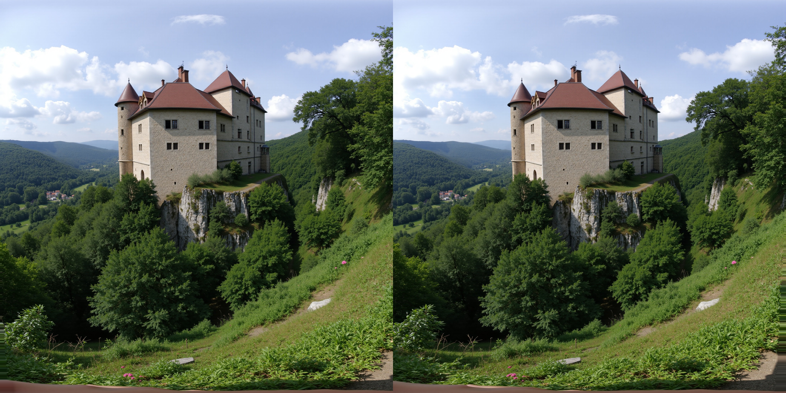

🥽 VR Stereo Test - A-Frame - Meta Quest 3
Instrukce:
1. Klikněte "Načíst VR scénu"
2. Použijte VR tlačítko v pravém dolním rohu
3. Nebo klikněte "Auto VR" pro automatický start
📷 Načíst VR scénu
🚀 Auto VR
🔍 Test cesty k obrázku
👁️ Skrýt/Zobrazit UI
